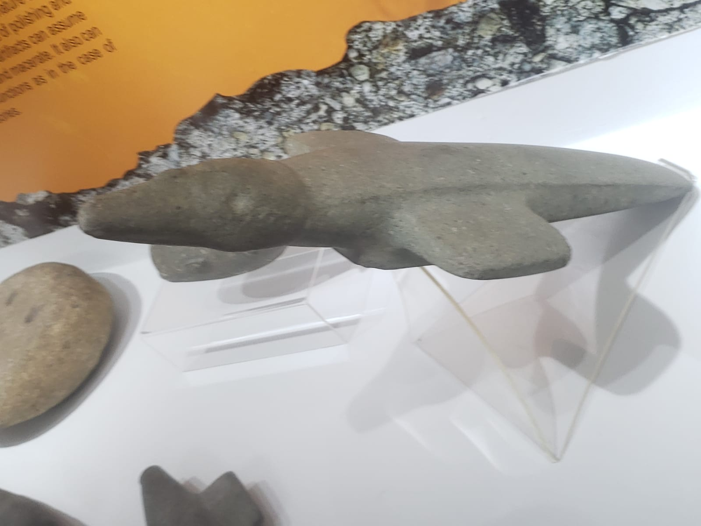

Sambaqui
O que é Sambaqui ?
Os sambaquis são amontoados principalmente de conchas , terra e areia, mas também podendo conter ferramentas, adornos ,ossos de humanos ou animais. Não existe uma teoria certa para função dos sambaquis, porém as mais conhecidas seria o sepultamento de humanos e animais ou acampamentos temporários (PACIEVITCH, s. d.)
Localização dos Sambaquis em nossa região :
figura 1 - Mapa dos sambaquis na nossa região

Fonte: Oliveira e Horn Filho, 2001
O povo que vivia no Sambaqui era da espécie Homo Sapiens?
Sim, as referências arqueológicas atuais afirmam que os povos que viviam nos sambaquis
eram homo sapiens. (SOUSA,2014a)
Os povos enterrados nos sambaquis são os homo sapiens, o que nos confirma que os povos que viviam
nos sambaquis eram os homo sapiens. (AGUIAR,2019)
Como esse povo chegou até a América? E, pelos elementos que existem na arqueologia, quando habitaram a região da Baía da Babitonga?
Existem diversas teorias que tentam explicar a chegada dos homo sapiens na América, alguns cientistas defendem que eles chegaram através do Estreito de Bering ou atravessando o pacífico de barco. (FERNANDES, 2017)
Em relação à região da Baía da Babitonga, existem evidências arqueológicas que sugerem que a região foi habitada por populações indígenas há pelo menos 4.000 anos. Sítios arqueológicos na área contêm artefatos como cerâmica, pedra lascada e instrumentos de pesca, bem como restos de animais que foram caçados e consumidos pelos habitantes da região. (AGUIAR, 2023a)
....Qual era a principal fonte de alimentação deles?
A principal fonte de alimentação deles eram os "Frutos Do Mar". Entre eles eram peixes, moluscos como caracóis, ostras e mexilhões, mas eles também se alimentavam de frutos silvestres como coquinhos. Alimentavam-se também da caça de animais pequenos, entres eles macacos, antas, gambás e tartarugas. (AGUIAR,2016)
Como se sabe essas informações?
Essas informações foram encontradas através de restos de peixes e os outros alimentos próximos a ossadas humanas e também, em sambaquis (AGUIAR, s.d.).
O que é um zoólito: Explique e apresente alguma foto que contenha um exemplo de um deles.
Zoo significa animal e lito pedra .Então os zoólitos são animais esculpidos em pedra pelo homem pré-histórico .Os zoólitos podem ser encontrados também dentro dos sambaquis.(Couri ,Aline)
Figura 2 - zoólito
Todo sambaqui contém sepultamentos?
Nem todos os sambaquis contêm sepultamentos, mas a maioria deles apresenta algum tipo de vestígio de atividade humana, como a presença de artefatos e restos alimentares.
No entanto, muitos sambaquis foram usados como cemitérios pelos povos pré-históricos que os construíram, e, nesses casos, é comum encontrar evidências de sepultamentos humanos. (SOUSA,2014b)
Existem outras partes do Brasil e do Mundo que contenham construções humanas parecidas com as dos Sambaquis da região da Baía da Babitonga?
Os Sambaquis podem ser encontrados na costa nordeste do Brasil, no Rio de Janeiro, São Paulo e em outros lugares na costa do Rio Grande do Sul.
A presença de sambaquis também foi relatada em outras partes das Américas. Encontramos outros vestígios dessa importante população pré-histórica em várias partes dos Andes, na costa dos Estados Unidos, no Peru e no Chile. passado, o estudo dos sambaquis remonta à ascensão e deslocamento dos humanos nas Américas.(AGUIAR,2023b)
Todos os sambaquis encontrados estão intactos ou alguns já foram destruídos? Como isso aconteceu?
"Alguns sambaquis foram destruídos pela exploração inconsequente das pessoas".(Forumeja, s. d.)
Qual a importância de preservar os sambaquis?
A importância de preservar os sambaquis é que são praticamente a única fonte de informações sobre a cultura do povo sambaquieiro, mostrando como viviam, suas técnicas e como se relacionavam com o meio ambiente, os Sambaquis são montes que guardam vestígios arqueológicos deixados pelo Homem da Pré-História. (TV brasil, 2023)
REFERENCIAS
Pacievitch, Thais “Sambaquis”; Info Escola. Disponível em : https://www.infoescola.com/arqueologia/sambaqui/. Acesso em: 16 abr. 2023.
Fernandes, Tatiana “PROJETO DE DIAGNÓSTICO E PROSPECÇÃO ARQUEOLÓGICA DO EIXO ECOLÓGICO LESTE E ESTRUTURAÇÃO DA REDE DE PARQUES AMBIENTAIS DE JOINVILLE, SC”; Joinville.sc.gov.br Disponível em : https://www.joinville.sc.gov.br/public/edital/anexo/598a34e0cc1d2e78375e1107dbfcd0a9.pdf. Acesso em: 16 abr. 2023.
AGUIAR, Lilian Maria Martins de. "Os povos sambaquis"; Brasil Escola. Disponível em: https://brasilescola.uol.com.br/historiag/os-povos-sambaquis.htm. Acesso em: 25 abr. 2023.
SILVA, Ruan. Zoólito do museu arqueológico do sambaqui(Fotografia).Foto tirada do museu arqueológico do sambaqui(2023).
tupis. TV brasil "A pré-história no Brasil e os sambaquis" Tv Brasil - Disponível em A pré-história no Brasil e os Sambaquis | Expedições. Acesso em: 25 abr. 2023.
Pré-História no Brasil. Ensinar História, 2014. Disponível em: Pré-História do Brasil (parte 4): os sambaquis do litoral. Acesso em: 02 maio. 2023.
História dos Povos Sambaquis. forumeja.org. Disponível em: http://forumeja.org.br/rj/?q=node/143. Acesso em :25 abr. 2023.
SOUSA, Rainer Gonçalves. “Povoamento da América”; Brasil Escola. Disponível em: https://brasilescola.uol.com.br/historia-da-america/ocupacao-continente-americano.ht m. Acesso em 11 de ago. de 2023